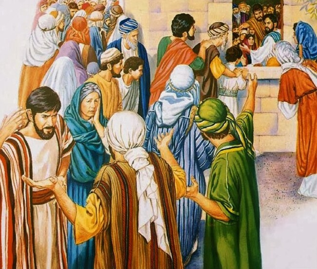
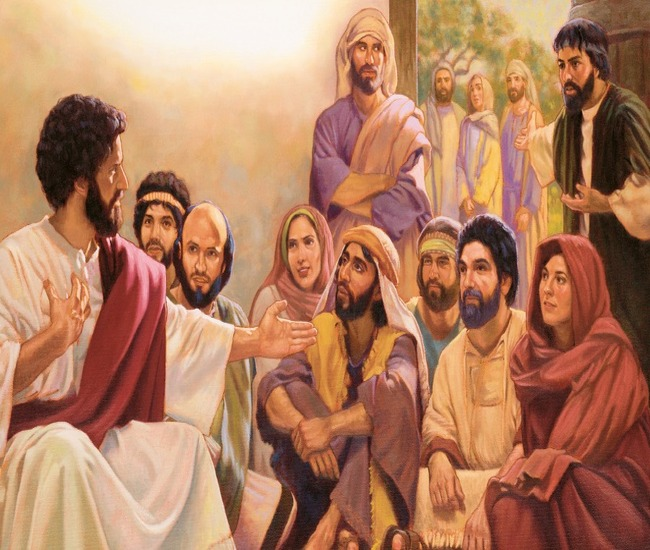

Lord Jesus's Mother And Brothers
While he yet talked to the people, behold, his mother and his brethren stood without, desiring to speak with him.
Then one said unto him, Behold, thy mother and thy brethren stand without, desiring to speak with thee.
But he answered and said unto him that told him, Who is my mother? and who are my brethren?
And he stretched forth his hand toward his disciples, and said, Behold my mother and my brethren!
For whosoever shall do the will of my Father which is in heaven, the same is my brother, and sister, and mother.
Matthew 12:46-50
- 
- 